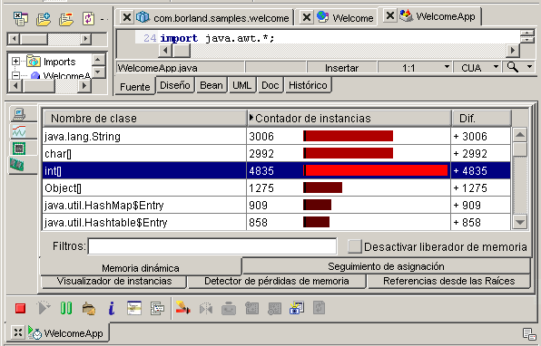

La optimización es una función de JBuilder Enterprise.
Se pueden optimizar tanto aplicaciones locales como aplicaciones distribuidas, lo que incluye servlets, páginas JSP, applets, beans EJB y tests de unidades. Para optimizar los archivos del proyecto, seleccione Ejecutar|Optimizar proyecto. El programa puede estar compilado. Optimizeit permite localizar los problemas de memoria, los puntos de bloqueo de hilos y el código inutilizado. La interfaz de usuario del optimizador, compuesta por la selección de herramienta, la barra de herramientas, las pestañas de vistas y la barra de estado se muestran en el panel de mensajes.

Si desea más información, consulte:
Generación de aplicaciones con JBuilder Integración de Optimizeit Suite
Si desea más información sobre las funciones de optimización, abra Borland Optimizeit Suite, seleccione cualquier herramienta y elija Información|Ayuda.